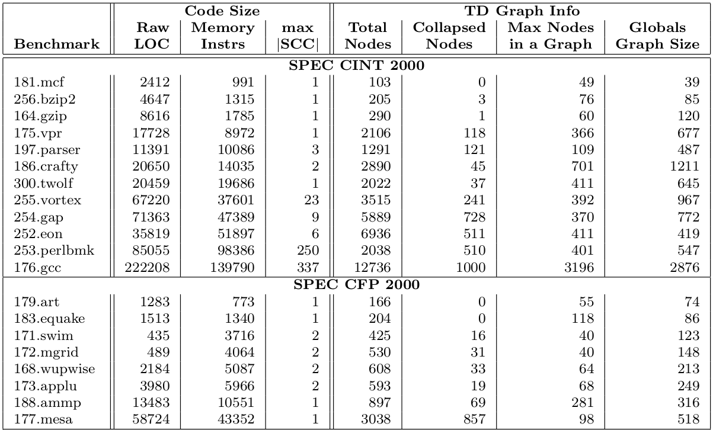
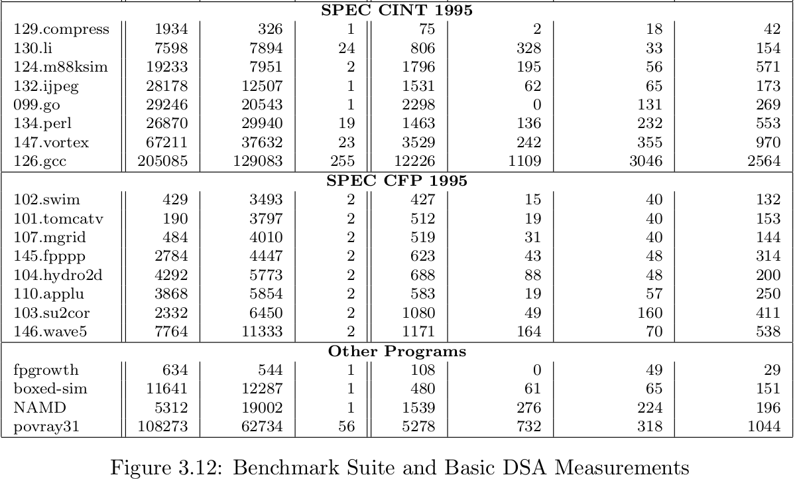
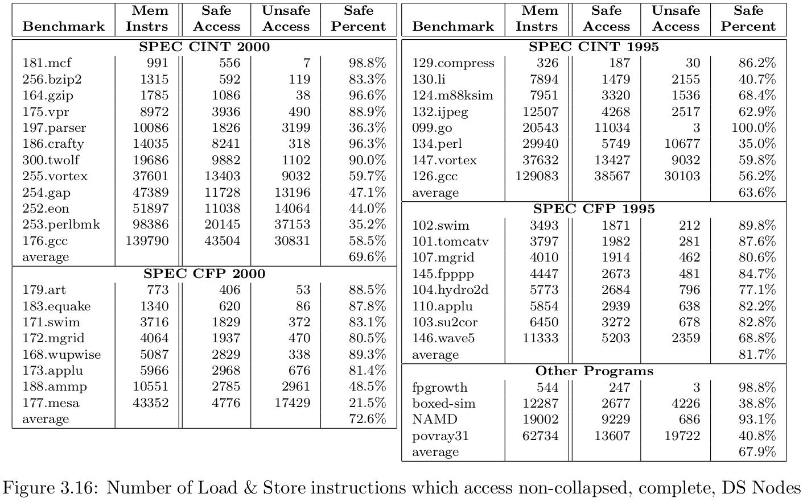

Flow sensitive1: takes into account the order of statements in a program.
Path Sensitive: takes into account the branch conditions.
Context Sensitive: names objects by entire acyclic call paths. A callee will return to its single call site instead of all possible call sites.
A pointer analysis algorithm
DS Graph is a field-sensitive representation of the point-to information. It is a directed multi-graph, where:
one graph for each function. Except where all functions share a common graph.
different nodes represent distinct memory objects.
One DS node = < $ \tau $, F, M, A, G >:
true if nodes includes an array;One DS edge: < s, $f_s$, t, $f_t$ >:
It names heap objects by entire acyclic call paths (which we refer to as “full heap cloning”), which allows distinguishing heap object allocated/destroyed by common function calls (eg. lib functions).
A pointer field at a node has only one outgoing DS edge, i.e. all targets of the pointer are merged into a single node.
Analysis is flow insensitive: does not take into account the order of statements.
Collapsed nodes are field-insensitive, represent objects that has incompatible types, tagged as “unknown type”.
(2005LattnerPhD2) If operations using incompatible types are found, the type for the node is treated as unsized array of bytes (T(n)=void *), and the fields and edges of the node are “collapsed” into a single field with at most one outgoing edge. The node is marked as ‘O’ meaning cOllapsed. If a node has been collapsed (i.e., O $\in$ flags_(n)), it is always treated in this safe, but field-insensitive, manner.
Full context-sensitive cloning is susceptible to exponential behavior in theory, however, the unification approach used effectively eliminates this in two ways:
DS graphs are created and refined in a three step process.
The BU and TD phase operate on the “known” Strongly Connected Components (SCCs) in the call graph.
A node must not be marked complete until it is known that all callers and callees potentially affecting that node have been incorporated into the graph.
(From 2005Embed:) The “complete bottom-up” DS graph for a function incorporates the effects of all functions reachable from the current function (i.e., immediate callees and their callees and so on), including functions called via function pointers3.
(From 2005Embed:) A final, “top-down” DS graph of a function incorporates the effects of both the callers as well as the callees of a function, so that it captures the full set of memory objects and aliasing relationships from all possible call sites (as well as those due to side effects of callee functions).
No type inference (superseded by below): (From 2005LattnerPhD) DSA extracts LLVM types for a subset of memory objects in the program. It does this by using declared types in the LLVM code as speculative type information, and checks conservatively whether memory accesses to an object are consistent with those declared types, without having to perform type-inference.
Inference based on uses:
(From 2005-TR-SAFECODE) DSA attempts to compute type information for every “points-to set” in the program by inferring the intended type based on the uses of pointers and not based on the type declarations or cast operations in the program. The “uses” include:
By ignoring casts and considering only actual uses, DSA is able to infer heap objects allocated via the malloc operation in C, which is untyped: the (usual) cast of the returned pointer value is ignored, but any uses of the pointer are correctly considered.
Experiments: DSA can infer type information for the targets of 70% of load/store operations in most C programs (on average), and over 90% in many programs.
Consistent Type: If all pointers to a points-to set are used consitently as one type $\tau *$ (or as the appropriate type for a field within $\tau$), then DSA infers the type of all objects in that set to be $\tau$.
Inconsistent Type: If type of pointers are not consistent in the points-to set, then DSA marks the type of the object to be “Unknown”.
Complete DSA in LLVM, and analysis is performed entirely at link-time, using stubs for standard C library functions to reflect their behavior2.
Benchmark: SPEC CPU 95, SPEC CPU 2000, and unbundled programs (Povray 3.1, NAMD, boxed-sim and fpgrowth).
How fast and how much resource required?
How much type information is DSA able to infer?
How precise is DSA for alias analysis?
 
Memory Instructions4 as a metric for benchmark size in addition to LoC.
max |SCC|: the size of the largest SCC in the call graph for the program.
The following graph shows the type inference result:

The first two columns, Benchmark and Mem Instrs list the name and total number of memory instructions (including address arithmetic, calls, etc)
Safe Access: the number of load/store instructions that target non-collapsed complete nodes.
Unsafe Access: the number of load/store instructions which target either collapsed or incomplete nodes.
load, store, malloc, alloca, and getelementptr instructions.
If you could revise
the fundmental principles of
computer-system design
to improve security...
... what would you change?